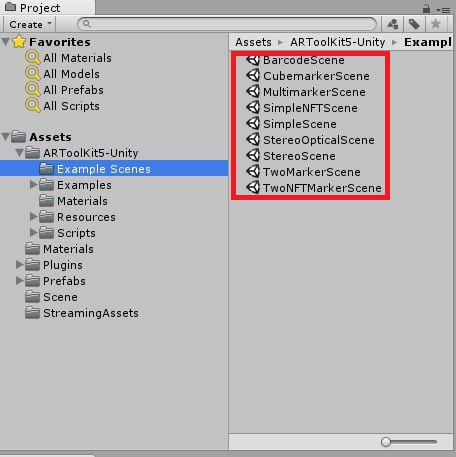
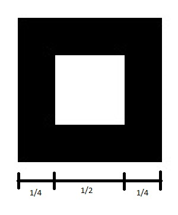
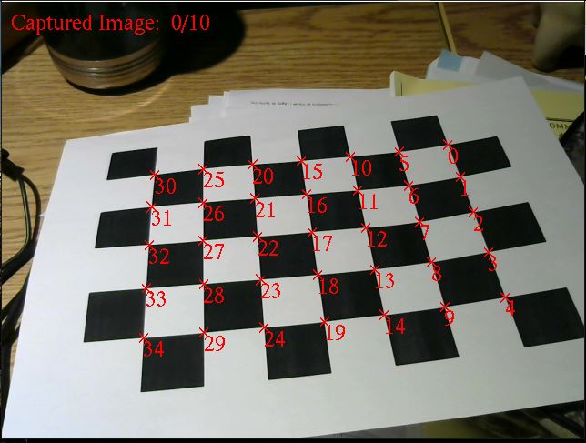

ARToolKit est un outil de développement qui permet au programmeur de développer des applications de réalité augmentée. C’est un outil de développement “Open Source” qui a été téléchargé plus d’un million de fois.
ARToolKit facilite la création d’applications multimédia en offrant la possibilité au programmeur de faire de la réalité augmentée, et ce, relativement facilement. Dans notre contexte d’apprentissage, ARToolKit a pu nous servir en nous donnant la possibilité de créer un jeu simple qui montre la force de la réalité augmentée. En effet, ARToolKit possède une version en paquet Unity, ce qui permet d’utiliser les fonctionnalités d’ARToolKit dans l’engin de jeu.
Dans ce paquet, on y trouve toutes les composantes pour créer une scène de réalité augmentée. De plus, des scènes d’exemples, avec différentes sortes de marqueurs est disponible pour faciliter la compréhension d’ARToolKit.
La détection de marqueur est très importante en réalité augmentée. En effet, c’est ce qui nous permet de détecter où il faut afficher les objets que nous voulons montrer sur le flux vidéo.
Avant de se concentrer sur la détection de marqueur, voici une courte description d’un marqueur : un marqueur est un objet réel, de préférence plat, qui possède un dessin ou une forme facilement reconnaissable. En voici un exemple, utilisé dans notre projet :
Comme on peut voir sur le marqueur ci-dessus, et c’est comme cela pour tous les marqueurs avec ARToolKit, le marqueur (1) est entouré d’un carré noir. Ce carré représente la limite pour la détection de marqueur. Il est nécessaire, car il dicte à ARToolKit qu’un marqueur se situe à l’intérieur de celui-ci. Un marqueur doit être noir et blanc et doit avoir un carré noir avec le une épaisseur d’un quart de la longueur d’un côté.
Certains pourraient sous-estimer l’importance de la calibration de la caméra. En effet, elle est impérative si l’on veut que la détection des marqueurs fonctionne vraiment bien. Calibrer une caméra pour la réalité augmentée assure la fluidité quand on bouge le marqueur dans une scène de réalité augmentée.
Pour calibrer une caméra pour ARToolKit, il faut utiliser un des nombreux outils qu’ARToolKit nous propose avec le paquet Unity. L’outil, nommé calib_camera.exe, s’utilise en plaçant la caméra sous plusieurs angles devant une feuille quadrillé (toujours fourni par ARToolKit).
Quand nous avons les 35 petits “x” sur les coins des carrés, cela veut dire que l’on peut prendre une “capture”. Après avoir pris plusieurs “captures”, un de configuration spécialisée pour la caméra se génère.